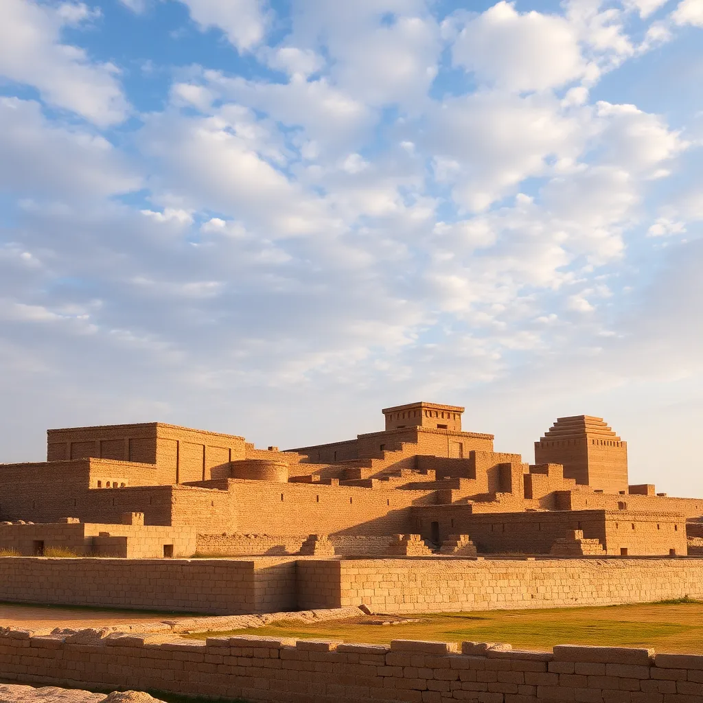

Urban landscapes have undergone dramatic transformations throughout history. From the compact, walled cities of ancient civilizations to the sprawling metropolises of today, the way we design and inhabit our communities reflects broader societal changes.
In this article, we'll explore the key milestones in urban evolution, examining how technological advances, economic shifts, and social movements have shaped the cities we live in. We'll also look at current trends and future possibilities for urban design.
The Ancient Roots
Early cities were driven by defense and resource management. Jericho, one of the world's oldest cities, was built around 9000 BC with massive stone walls for protection. Mesopotamian cities like Uruk featured ziggurat temples and carefully planned layouts.
The Medieval Era
During the Middle Ages, European cities began to grow around castles and cathedrals. Streets were often narrow and winding, following the natural lay of the land rather than planned grids.
The Industrial Revolution
The 19th century brought unprecedented urbanization. Factories drew workers to cities, leading to rapid population growth and the need for new housing solutions. Tenement buildings and slum conditions emerged as challenges.
Modern Metropolises
Today, cities are complex ecosystems integrating technology, sustainability, and diversity. From green roofs to smart traffic systems, urban planners are addressing 21st-century challenges like climate change and population density.
As we look to the future, cities must balance growth with liveability. Innovations in transportation, energy, and community design will play crucial roles in shaping the urban landscapes of tomorrow.